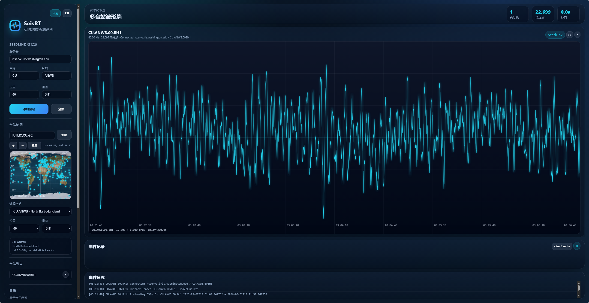

SeisRT 当前更适合被理解为一个正在持续完善的实时监测项目页面，而不是已经大规模部署的商业预警平台。
SeisRTMonitor 项目当前目标是构建一个稳定、低延迟、可扩展的地震数据实时监测系统，重点包括 SeedLink 实时数据接入、滚动波形显示、多台站扩展、事件触发检测以及事件记录保存。
这一页面主要承担项目介绍、实时入口和演示说明的作用；下方提供轻量化实时监测面板，完整版 SeisRTMonitor 控制台可按需在新窗口打开。
支持接入 SeedLink 实时流，并为后续多台站、多通道扩展保留接口。
当前以事件触发、日志记录、事件前后波形保存和监测状态展示为主。
可直接接入 Web 监测接口，用于实时波形观测、演示和功能验证。

面向 SeedLink 实时流的轻量观测面板，保留地图、事件、统计和单台站波形预览。
下方可启动单台站轻量监测
页面默认读取服务器端轻量缓存：后台定时更新公开地震目录，并轮询一个固定台站的小窗口波形。 普通访客不需要在本地运行 SeisRTMonitor；公开页采用定时更新快照，不是连续流动画。
后端允许每 3 秒刷新一次该台站 5 分钟窗口波形，默认显示延迟为 1 分钟；这不是连续流动画。
以下能力描述以当前仓库中的 SeisRTMonitor 设计目标与已实现方向为准，尽量避免宣传式夸张表述。
面向单台站到多台站扩展的实时波形观测界面，重点保证持续刷新、低延迟滚动显示和基本状态可读性。
以事件触发检测、报警提示和事件片段保存为主，当前更偏向监测平台能力建设，而不是成熟的社会化预警发布系统。
为后续震相识别、简单定位、震级估计和回放分析保留结构，先把实时流、缓存和展示链路打稳。
项目中已经包含台站地图、台站列表和事件位置展示方向，用于补充实时波形之外的空间信息。
支持网络、台站、位置和通道等参数输入，便于在实验与演示过程中快速切换目标台站。
页面提供项目总览与轻量实时入口，完整版 SeisRTMonitor 控制台可按需新开窗口，适合本地部署后的演示、教学和内部测试。
这里保留真实的开发方向与阶段信息，不再展示虚构的“成功预警案例”。
根据仓库中的 README 与架构说明，SeisRTMonitor 目前仍处于“架构设计与项目骨架”阶段， 已经具备实时监测页面、基础数据流与监测入口的方向，但仍在持续完善中。
这是一个围绕地震数据实时观测展开的个人项目页面，重点是把实时波形、事件记录、台站切换和演示入口整合在一起， 方便后续本地部署、教学展示和功能验证。
以下信息来自个人主页，保留真实可公开的联系方式，不再展示虚构机构和热线。
SeisRT 页面用于介绍项目定位、展示实时入口，并与 SeisRTMonitor 轻量监测面板联动。 如果你只想直接看实时波形，建议在上方“实时监测”区域启动轻量监测，或新窗口打开完整界面。